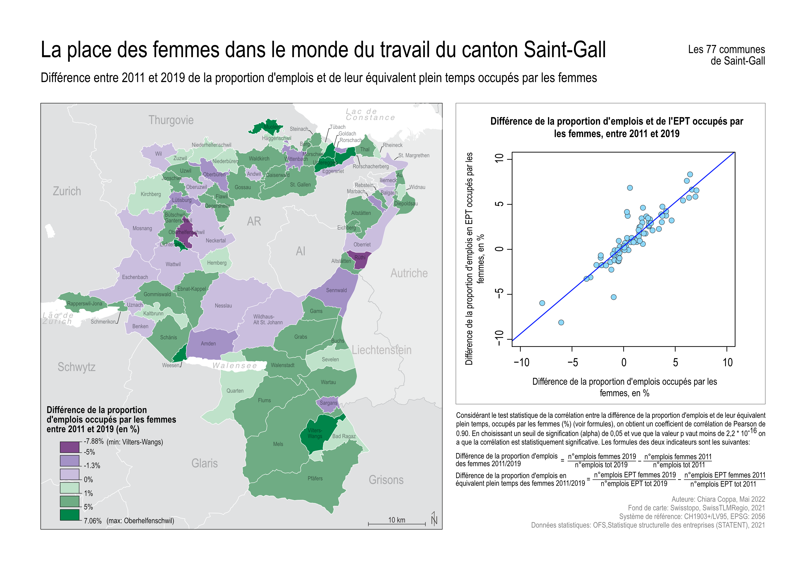
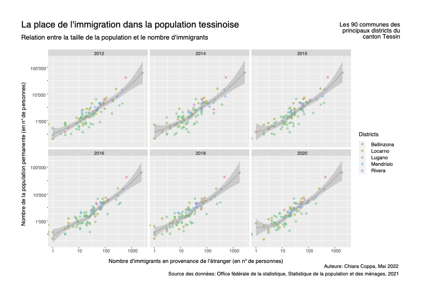
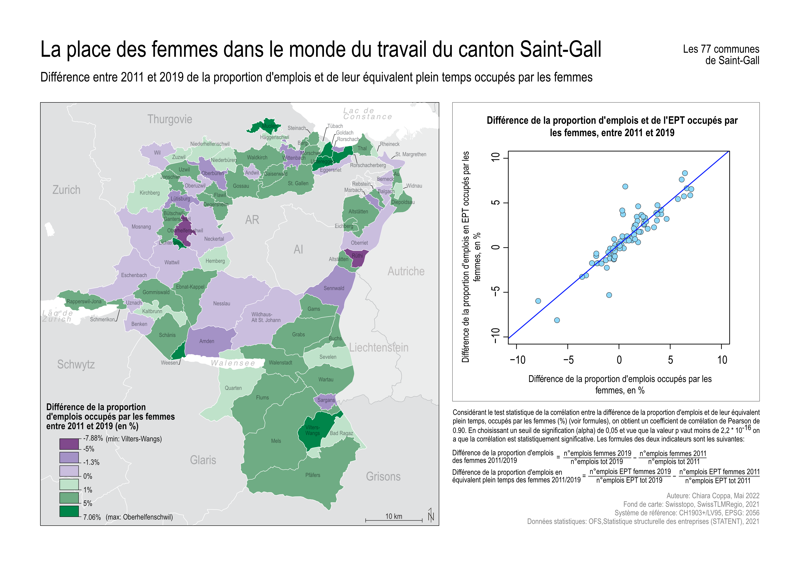
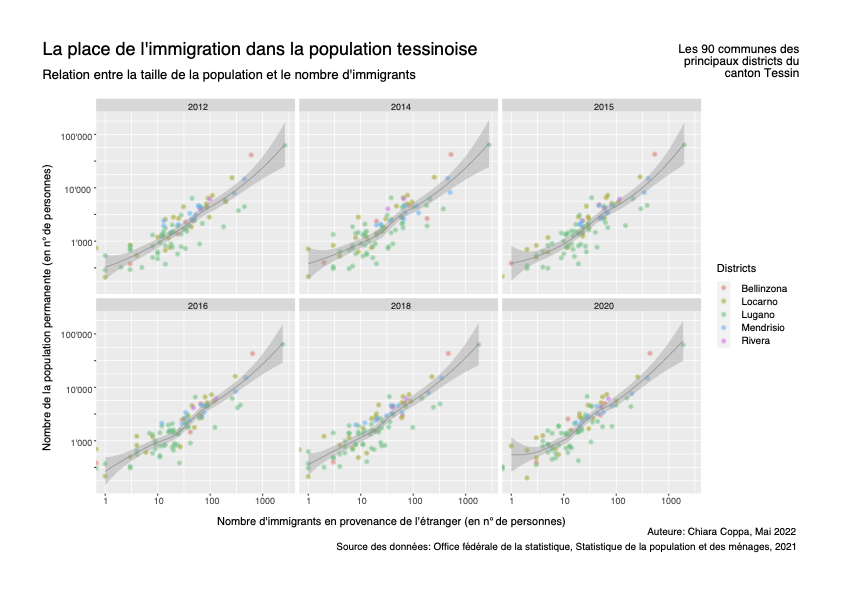
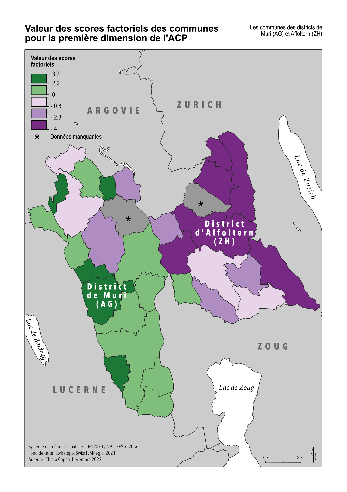
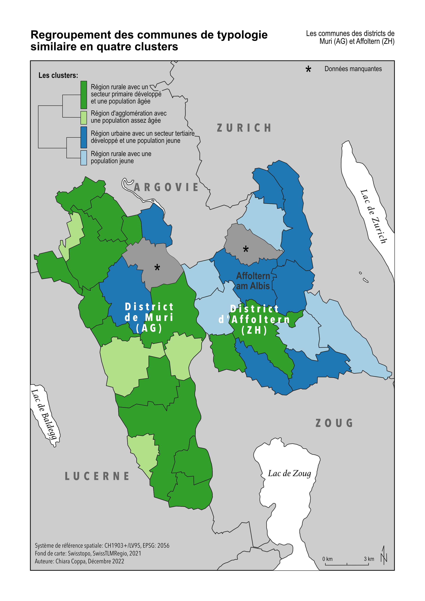
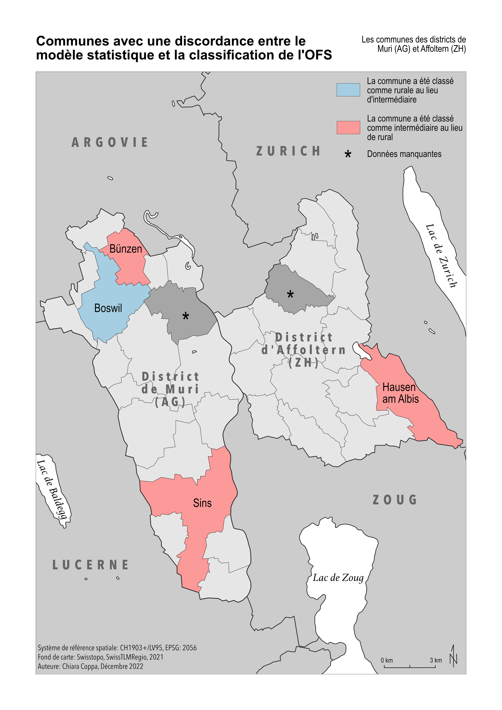
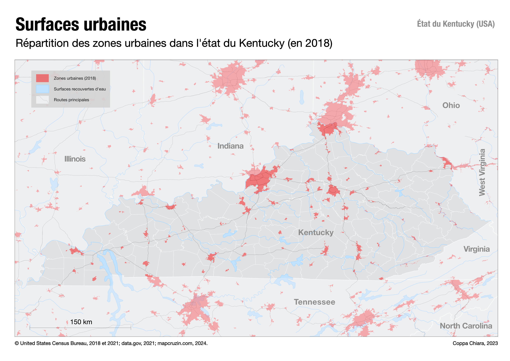

Mes premières cartes en symboles proportionnels colorés
Cartes réalisées dans le cadre du cours Cartographie et SIG en première année de Bachelor.
La première carte a été réalisée manuellement à l’aide d’un logiciel de graphisme (Affinity Designer),
tandis que la deuxième a été produite avec le logiciel QGIS puis finalisée dans le logiciel de graphisme.
Le choix des carrés plutôt que des cercles pour les symboles proportionnels est lié à la sous-estimation
perceptive de la taille des cercles par l’œil humain.
Visualisation et analyse de données géographiques
Projets réalisés dans le cadre du cours Visualisation et analyse des données géographiques.
Les images suivantes présentent différents exemples de visualisation de données géographiques :
une carte de situation (première image), une carte choroplèthe accompagnée d’un graphique de
corrélation réalisé dans R (deuxième image), ainsi qu’un graphique en petits multiples, également
réalisé dans R (troisième image), accompagné d’une description de l’analyse.
 


Voir le rapport d'analyse
Analyses spatiales et quantitatives en géographie
Projets réalisés dans le cadre du cours Analyses spatiales et quantitatives en géographie.
Les deux projets suivants présentent des exemples d'analyse quantitative de données géographiques à l'aide du logiciel R.
Le premier projet est une étude territoriale sur la Surface agricole utile dans deux communes de Suisse alémanique.
Voir le rapport explicatif ainsi que le rapport technique.
Le deuxième projet était centré sur la réalisation d’une Analyse en Composantes Principales (ACP), suivie d’une Classification Ascendante Hiérarchique (CAH) et d’une Régression Logistique Multinomiale (RLM).
Voir le rapport de l'ACP le rapport de la CAH et le rapport de la RLM
  
Géomatique et SIG
Dans le cadre du cours Géomatique et SIG
j’ai réalisé un projet personnel portant sur l’analyse du bruit routier dans la commune de Roveredo
(dans les Grisons italiens). La construction d’un tunnel éloigné des zones habitées a permis de réduire
significativement les nuisances sonores, améliorant ainsi la qualité de vie des habitants. C’est avec
cette étude que j’ai participé au concours ESRI Young Scholar Award 2023, pour lequel j’ai réalisé un
StoryMaps sur ArcGIS.
Lien vers le StoryMaps
Comparaison entre l’état initial du bruit dans la commune et la situation après la réalisation de la route de contournement.

Infographie Travail de Bachelor
L'image suivante représente l'infographie au format A0 réalisée pour résumer mon travail de Bachelor.

Diagnostic territorial
Dans le cadre du cours Diagnostic territorial j'ai réalisé un rapport d'analyse statistique afin de déterminer s'il existe un lien entre les prescriptions d’opioïdes en 2017 au Kentucky et le contexte géographique de ces prescriptions, à l’échelle des comtés. L'analyse s'est basée sur une ACP et une étude des corrélations. Les calculs statistiques ont été réalisés en groupe, mais le rapport final a été rédigé individuellement.
Rapport d'analyse

Carte interactive
Dans le cadre du cours Concepts de base en géovisualisation
j'ai réalisé une carte intéractive sur les randonnées en montagne du canton Tessin.
Cliquez sur l'image pour accéder à la carte

Atelier de projet urbain et territorial : vision sur la commune de Pully
Dans le cadre d’un atelier de projet urbain et territorial en groupe,
nous avons réalisé un projet pour les rives du lac de la commune de Pully.
Le résultat a été synthétisé dans trois posters au format A0